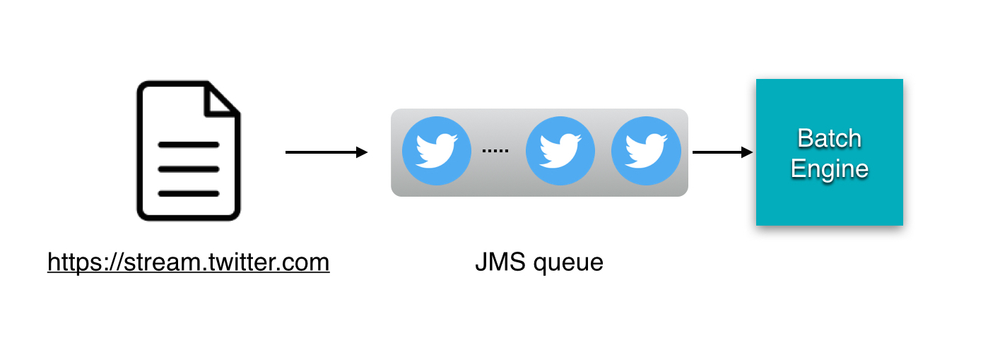

In this tutorial, you will learn how process data asynchronously using Easy Batch and JMS.
Suppose you have a stream of tweets that you would like to process asynchronously using a JMS queue:

Easy Batch provides the JmsQueueRecordReader that is able to read data from a JMS queue.
Let's get started.
The JmsQueueRecordReader needs to be configured with the JMS queue connection factory and the queue to read data from. It will produce JmsRecord instances with a javax.jms.Message as payload.
Engine engine = new EngineBuilder()
.reader(new JmsRecordReader(JMSUtil.queueConnectionFactory, JMSUtil.queue))
.build();
The JMSUtil class is used to start an embedded broker and to provide JMS utilities.
The broker setup details are not shown here for readability's sake.
To process JmsRecord instances, you will use the following RecordProcessor:
public class JmsRecordProcessor implements RecordProcessor<JmsRecord, JmsRecord> {
@Override
public JmsRecord processRecord(JmsRecord record) throws Exception {
TextMessage message = (TextMessage) record.getPayload();
System.out.println("JMS message '" + message.getText() + "' processed");
return record;
}
}
This processor will extract the message payload and print it out to the console.
To launch the tutorial, you will use the following class:
public class Launcher {
public static void main(String[] args) throws Exception {
JMSUtil.startEmbeddedBroker();
JMSUtil.initJMSFactory();
// Build easy batch engines
Engine engine = new EngineBuilder()
.reader(new JmsRecordReader(JMSUtil.queueConnectionFactory, JMSUtil.queue))
.filter(new JmsPoisonRecordFilter())
.processor(new JmsRecordProcessor())
.build();
//run engine and get report
Report report = engine.call();
System.out.println(report);
JMSUtil.stopEmbeddedBroker();
}
}This class will start an embedded JMS Broker to listen to incoming tweets.
In order to send tweets as JMS messages to the queue, you will use the following utility class:
public class JMSSenderLauncher {
public static void main(String[] args) throws Exception {
//init JMS factory
JMSUtil.initJMSFactory();
// Send some messages to JMS queue
Scanner scanner = new Scanner(System.in);
String input;
do {
input = scanner.nextLine();
JMSUtil.sendStringRecord(input);
} while (!input.equalsIgnoreCase("quit"));
//send a poison record at the end to stop the engine
JMSUtil.sendPoisonRecord();
System.exit(0);
}
}The JMSSenderLauncher class makes the tutorial interactive: you will be able to send tweets to the queue by typing in tweets in the console.
To stop the execution, you have to type in quit in the console. This will send a poison record to the queue which will cause the engine to stop execution.
Poison records serve as End-Of-Stream messages, they are used to stop the engine (gracefully).
Easy Batch provides the JmsPoisonMessage to stop the engine whenever it receives a message of this type.
Poison records have no business value, filter them using the built-in JmsPoisonRecordFilter.
That's all, you can now run the tutorial and see the results.
To run the tutorial, proceed as follow:
$>git clone https://github.com/benas/easy-batch.git
$>cd easy-batch
$>mvn install
$>cd easybatch-tutorials
$>mvn exec:java -PrunJmsTutorial
This will start an embedded JMS broker listening to incoming messages.
To start the message sender class, fire up a second terminal and run the following command:
$>mvn exec:java -PrunJmsSender
You will be able to type in tweets in the console to post them to the JMS queue and see how the engine will process them as they come. Here is a sample output:
1,foo,easy batch rocks! #EasyBatch
Message '1,foo,easy batch rocks! #EasyBatch' sent to JMS queue
2,bar,@foo I do confirm :-)
Message '2,bar,@foo I do confirm :-)' sent to JMS queue
quit
Message 'quit' sent to JMS queue
INFO: Initializing easy batch engine
INFO: Data source: JMS queue: q
INFO: Strict mode: false
INFO: Total records = N/A
INFO: easy batch engine is running...
JMS message '1,foo,easy batch rocks! #EasyBatch' processed
JMS message '2,bar,@foo I do confirm :-)' processedFirst, you need to checkout the source code of the tutorial available here:
$>git clone https://github.com/benas/easy-batch.gitIf you do not have git installed, you can download a zip file containing the project's source code from GitHub here.
Then, import the easybatch-tutorials module in you favorite IDE and resolve maven dependencies.
Finally, run the following classes separately without any argument:
org.easybatch.tutorials.advanced.jms.Launcher to launch the batch engineorg.easybatch.tutorials.advanced.jms.JMSSenderLauncher to launch the message senderIn this tutorial, you have learned how to use Easy Batch along with JMS to create an asynchronous batch application.
As you have seen in the Parallel jobs tutorial, you can also distribute the work across multiple Easy Batch worker instances.
When combined together, asynchronous and parallel processing provide an extremely powerful technique of data processing! Easy Batch makes it a breeze
In the next tutorial, you will go a step further, by balancing the workload to an army of worker engines distributed across a cluster of machines.